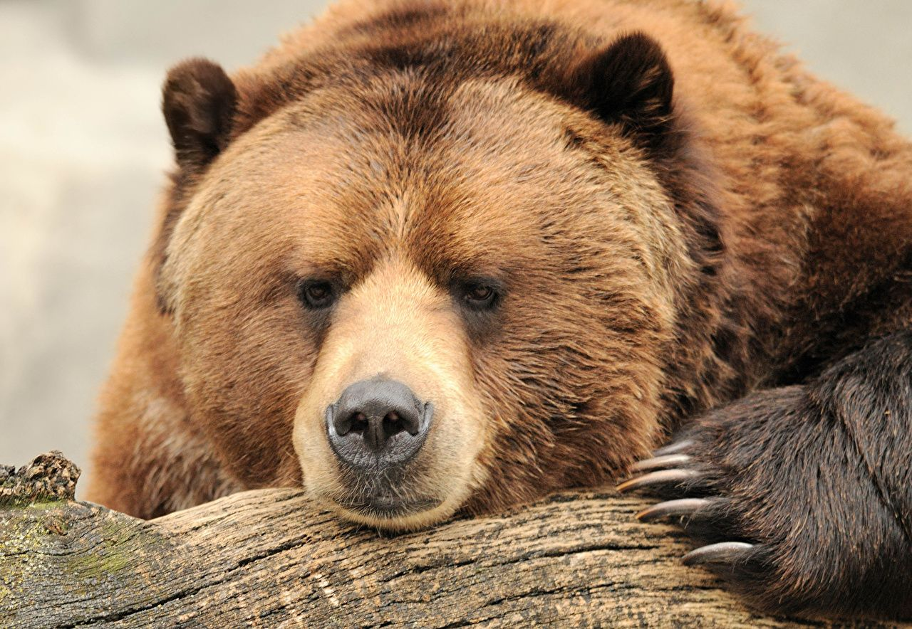
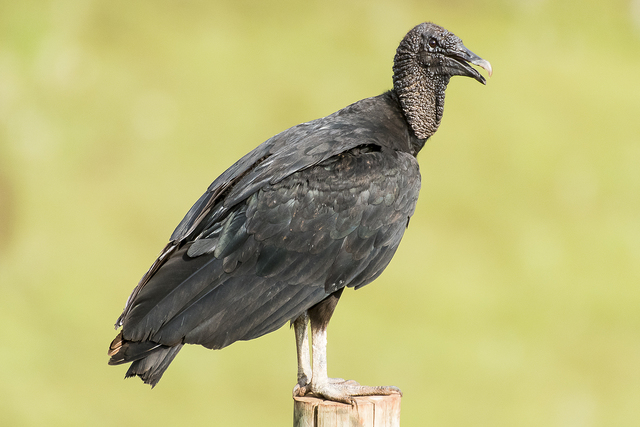

Urso
Ursidae
| Reino: | Animalia |
| Classe: | Mammalia |
Os Ursos (latim científico: Ursidae) constituem uma
família de mamíferos plantígrados, da ordem Carnivora, geralmente de grande porte, contendo os ursos e os
pandas. Embora classificado como urso, e logo após, como procionídeo, junto com o panda-vermelho, o
panda-gigante foi recolocado dentro da família dos ursídeos devido às novas pesquisas genéticas. Algumas
características comuns dos ursos são pelagem espessa, rabo curto, o olfato desenvolvido e as garras não
retráteis. Os ursídeos são geralmente animais omnívoros, mas se alimentam principalmente de carne.
As espécies mais antigas e primitivas desta família estão reunidas no gênero
Ballusia, do Mioceno Inferior, que ainda retêm características similares aos Hemicyonidae.
Do Ballusia descende o gênero Ursavus, fonte dos ursíneos, e talvez o Agriarctos,
ancestral dos agrioteríneos.
Os ursos existem em todos os continentes, em exceção na África, embora algumas
fontes afirmem terem avistado o Urso nandi, mas sem comprovarem a sua existência.
Urubu
Coragyps atratus
| Reino: | Animalia |
| Classe: | Aves |
O urubu-de-cabeça-preta (nome científico: Coragyps
atratus) é uma espécie de ave catartiforme da família Cathartidae, pertencente ao
grupo dos abutres do Novo Mundo. Deste grupo, é uma das espécies mais frequentemente observadas, devido ao
fato de realizar voos planados em correntes térmicas a grandes alturas e por possuir atividade durante todo
o dia.
O urubu-de-cabeça-preta, como as outras espécies de urubus, possui a cabeça
depenada, sendo um pouco rugosa. Essa espécie possui uma boa visão e um olfato apurado, mas não tanto como
seu parente mais próximo, o urubu-de-cabeça-vermelha (Cathartes aura. S), que localiza a carcaça
três vezes mais rápido que essa espécie. Isto se deve ao fato de que a parte do seu cérebro que se encarrega
do instinto olfativo é cerca de três vezes maior do que a dos urubus-de-cabeça-preta. Possui de 56-74 cm de
comprimento, com envergadura de 1,33-1,67 m. Seu peso médio é 1.18 kg (macho) 1.94 kg (fêmea) nas zonas
tropicais; e entre 1,6-3 kg na América do Norte e Andes. Urubus que habitam os Andes e a América do Norte
são mais pesados, pesando em média 2.15 kg, já os que os que habitam nas planícies da América central e do
Sul, pesam geralmente 1.6 kg.
Os urubus-de-cabeça-preta fazem ninhos em terrenos longe da presença humana, junto
do solo e nunca são feitos a mais de 50 cm de altura. Os ovos, de cor cinza ou verde-pálida, são incubados
por ambos os genitores durante 32 a 40 dias. Os juvenis eclodem com plumagem branca e são alimentados por
regurgitação. Com o passar dos dias, os juvenis ganham uma cor branco-rosada e penas um pouco azuladas. O
primeiro voo ocorre por volta das 10 a 11 semanas de vida e com cerca de 3 meses já têm a plumagem de
adulto.
O urubu-de-cabeça-preta alimenta-se de carniças e frutas em decomposição como a
pupunha. Este modo de alimentação necrófaga confere-lhes grande importância ecológica, pois ajudam a
eliminar carcaças do ecossistema. Em áreas habitadas por humanos, eles também se alimentam de matéria em
decomposição em depósitos de lixo. Seu sistema digestivo é muito eficaz e graças ao seu ácido estomacal ele
é capaz de digerir nervos e ossos.